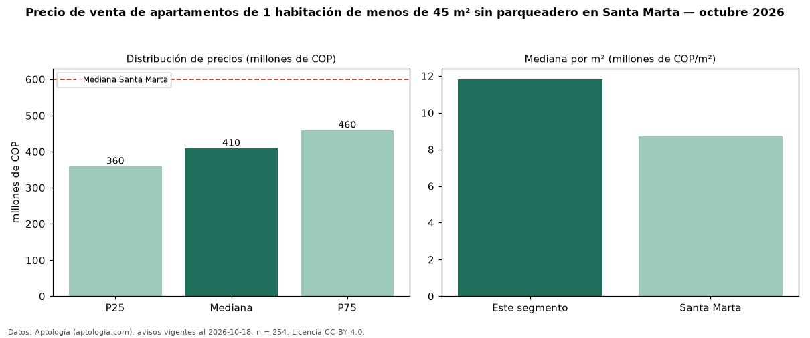

Precio de venta de apartamentos de 1 habitación de menos de 45 m² sin parqueadero en Santa Marta — octubre 2026
Con 254 avisos vigentes, el precio mediano de apartamentos de 1 habitación de menos de 45 m² sin parqueadero en venta en Santa Marta es COP 410 millones. Prácticamente coincide con la mediana de los apartamentos de 1 habitación de menos de 45 m² en venta de Santa Marta (COP 400 millones, n = 596); este segmento reúne el 43 % de esos avisos. Por metro cuadrado, la mediana es COP 11,82 millones/m² (n = 235), 4 % por encima de los apartamentos de 1 habitación de menos de 45 m² en venta de Santa Marta (COP 11,39 millones/m²). El área mediana anunciada es 34 m². La administración mediana declarada es COP 346.000 al mes (n = 149). El estrato más frecuente es 6 (59 % de los avisos con estrato). La mediana de todos los apartamentos en venta de Santa Marta es COP 600 millones (−32 % de diferencia). La mitad central de los avisos va de COP 360 millones a COP 460 millones (razón 1,3), una dispersión baja. Datos: Aptología (aptologia.com), CC BY 4.0 — https://www.aptologia.com/venta/santa-marta. Archivos: PDF, CSV con las cifras y gráfica PNG.

| Avisos únicos | 254 |
|---|---|
| Percentil 25 | COP 360.000.000 |
| Mediana | COP 410.000.000 |
| Percentil 75 | COP 460.000.000 |
| Mediana por m² | COP 11.818.181 |
Fuente: avisos vigentes de portales inmobiliarios recopilados por Aptología, deduplicados (mínimo 30 avisos únicos por celda). Precios pedidos, no cerrados. Fecha: 2026-10-18.